欧游札记之火舞西班牙（Day9格拉纳达—阿尔罕布拉宫）
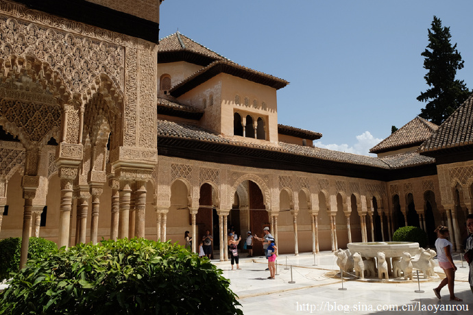
Day9 格拉纳达—阿尔罕布拉宫
天刚蒙蒙亮，我们便爬起床洗漱完毕吃完早餐，怀揣着提前几个月预定好门票便兴冲冲地向阿宫拾级而上。
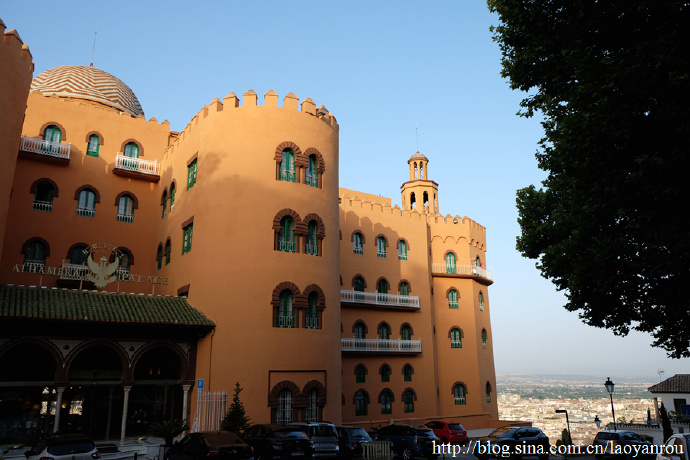
本以为赶了个早集，可没想到了阿宫门口售票处，才发现早有一大群各国游客熙熙攘攘地排队等候参观了，其中还有不少讲国语的同胞。看来之前网上所传言的阿宫游客经常爆棚、若无预订难以入内的情况此言非虚也。等到了八点半开放时间，一大群人便哗哗地涌入，然后又如鸟兽散般四散而去，因为宫殿确实太大，足以容纳成千游客在内四处游荡而不至于接踵摩肩。阿宫其实和故宫类似，分外宫和内宫，内宫门票需要单独购买或联票购买，有点像故宫的珍宝馆和钟表馆，但不同的是阿宫的内宫并无文物或奇珍异宝供游客参观，因为宫殿建筑本身就是无价之宝。在所有内宫和花园之中，核心中的核心是国王行政并居住过的纳斯尔宫殿，其他还有卡洛斯五世宫殿、作为夏季行宫的赫内拉里菲宫殿、帕塔尔花园等。
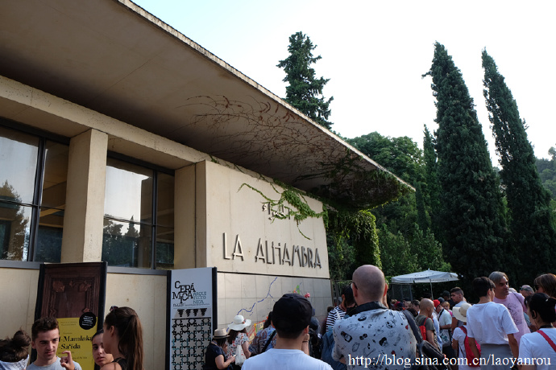
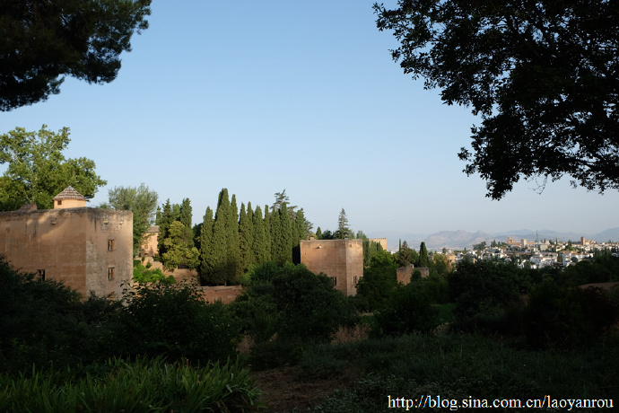
我们不远万里而来当然是买了所有内宫门票，按照好料要沉底的原则，加之预约纳斯尔宫参观时间为中午半个小时，所以按惯例先从核心周边开始看起，巡游完一圈刚好到点参观压轴的纳宫。我们第一站是赫内拉里菲宫殿，入宫之前先要经过一座迷宫似的花园，花园的“城墙城门”均由高耸密集的柏树修建而成，中间是一长条形开满莲花的水池和间隔其中的花瓣型小喷泉，颇具凡尔赛宫后花园的风味，但喷泉形制规模却小巧精致温柔了许多。游客要经过重重柏树修剪而成的“城门”才能抵达赫宫，还真有那么一点柳暗花明又一村的感觉。
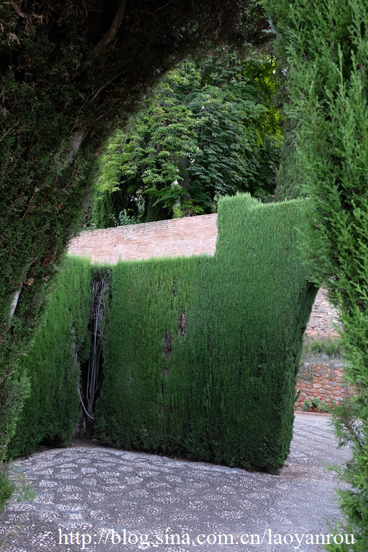
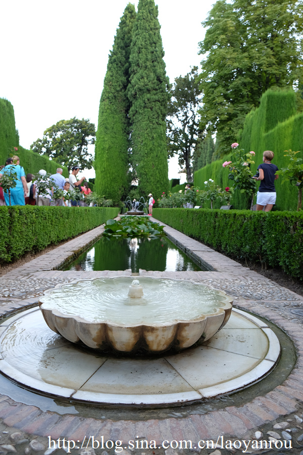
作为夏季行宫必备条件，位于太阳丘陵上的赫宫少不了水的元素，源自内华达山脉的清泉经过阿拉伯人精心构建的水利工程注入到赫宫的水池水道中，化作缕缕喷泉在赫宫中央的水池上交织成门，两侧的低矮灌木夹杂着薰衣草、月季、玫瑰等和一些不知名的鲜花在矮树掩映下显得格外绿意盎然。
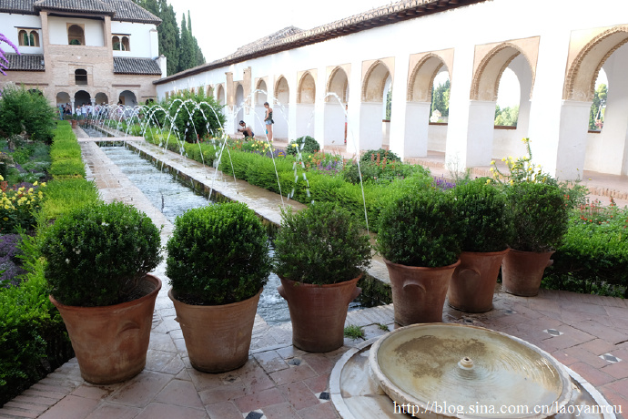
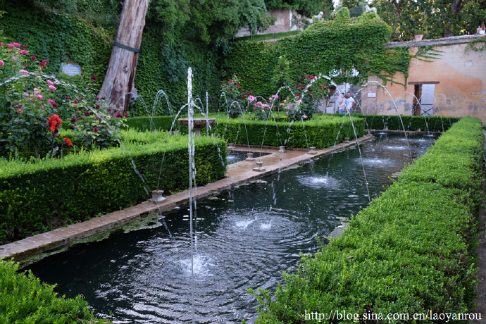
通向宫殿的一侧走廊侧面全是一个个开放的拱形窗子，刚好能将赫宫外阿宫的一角以及格拉纳达老城的美丽风景尽收眼底。 而赫宫本身虽然只是一个国王夏天避暑的行宫，但已经呈现出经典阿拉伯灰泥雕艺术的端倪，随便抬个头，就能看见门、窗户和墙壁上布满了灰泥雕的装饰，隐藏着数不胜数难懂的阿拉伯文字、纹饰和图案。但除此以外宫殿中找不到任何家具和物品，不知道是否因为伊斯兰教追求清心寡欲对起居用具方面没啥特殊要求的缘故？这点倒是与欧洲或东方其他类似行宫差别较大，尤其不能与中国颐和园、圆明园、承德避暑山庄等皇家用度的气派相比。而且受制于地形和面积原因，其园林水系和总体建筑的设计也不可能做到大开大阖，既没有碧波荡漾的湖水，也没有层层叠叠的亭台楼阁，但却胜在因地制宜、小巧精致，着实佩服摩尔工匠治大国如烹小鲜般的巧思细作了。
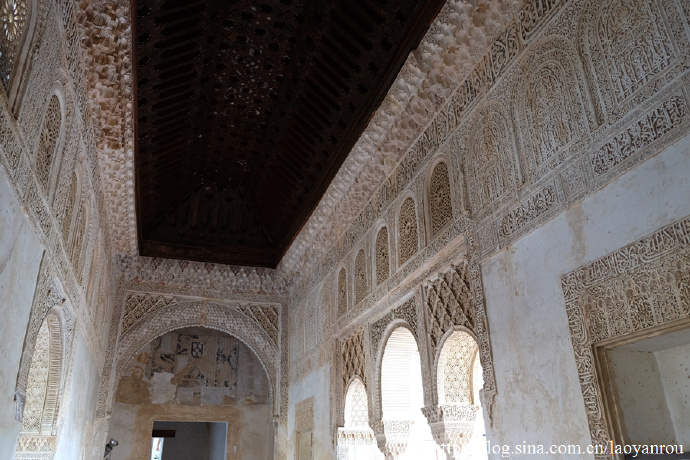
离开赫宫时同样受到了入宫前夹道欢迎般的礼遇，只不过夹道者从柏树墙换成了夹竹桃拱门。时间尚早，我们便沿着阿宫的外围逛了一圈，经过了车辆之门、审判门和葡萄酒门等古老的城门，它们大多已废弃失去了城门基本的功能，反倒是道路两旁的柏树墙门相较而言显得生机勃勃。阿宫的水利灌溉系统的遗址非常庞大、充分体现了阿拉伯人对水利工程极高的造诣，久望遗址眼前仿佛浮现了当年纵横交错、高低错落、如蜘蛛网般维持着整个阿宫的水脉体系。
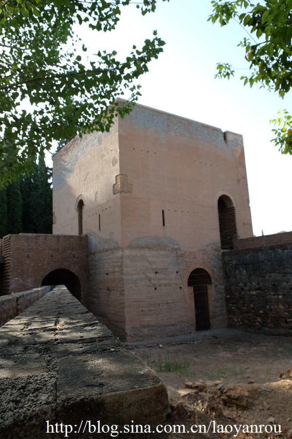
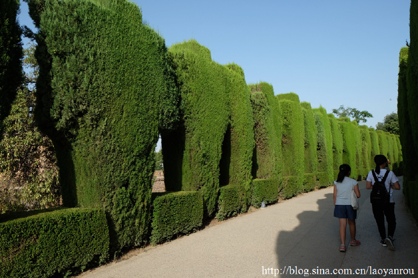
前往卡洛斯五世宫殿的路上，途经了几处可圈可点的景点：坐落于阿宫内的国营宾馆，古色古香，小径通幽，倘若入住此地便可享受当年帝皇般的环境和礼遇，难免令人浮想联翩；宫殿外原先是下人居住的平房里，仍可以看见阿拉伯匠人在坚持用锤子和刻刀创作传统伊斯兰木艺雕盘，手艺相当精湛，依稀可见当年摩尔工匠的执着；还有一座据说是公主浴室的建筑，东拐西绕进入浴房后发现眼前一亮，红砖屋顶上开着五六个八角星的天窗，阳光如同夜晚加大版的繁星一般照亮了原本黑漆漆的房间，可见摩尔人对自然采光技术应用之娴熟。
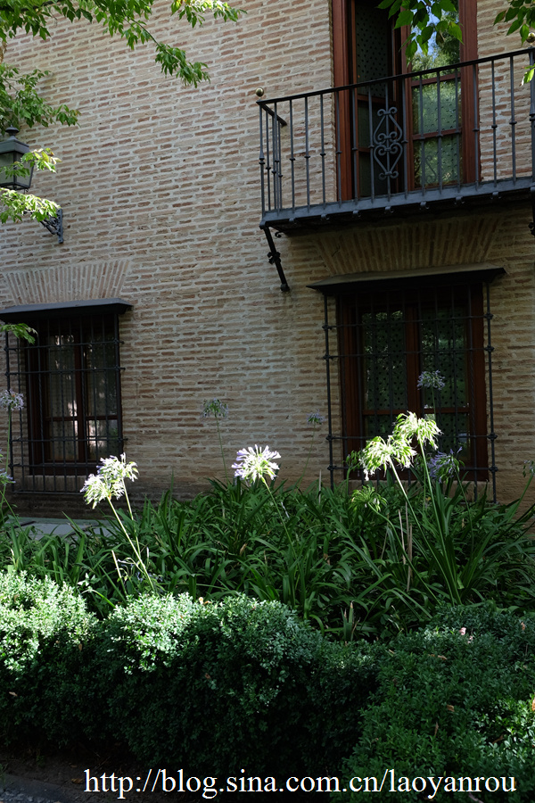
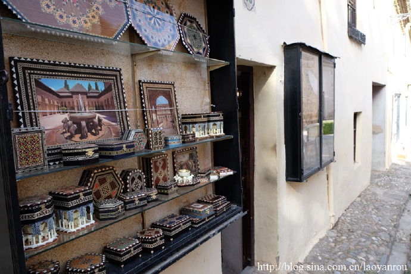
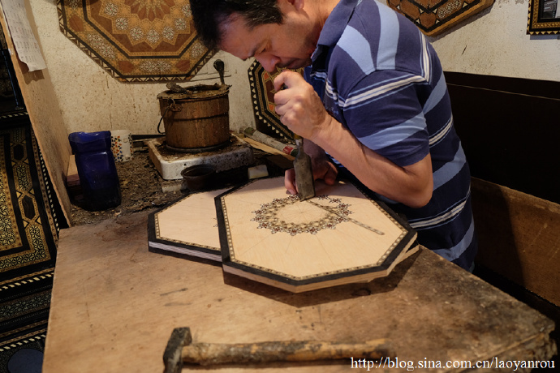
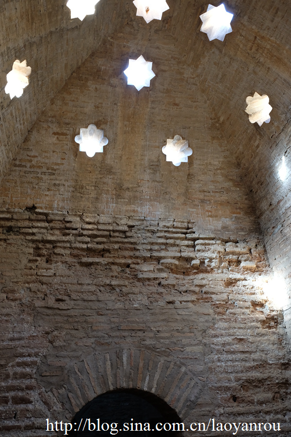
如果说阿尔罕布拉宫除了阿拉伯风格建筑以外还有什么另类的话，卡洛斯五世宫殿算是其中之一。当年天主教国王的孙子卡洛斯五世曾想定都格拉纳达，便心血来潮地在阿宫内建一座文艺复兴风格的全新宫殿以匹配西班牙帝国的泱泱地位，只可惜向摩尔人征税筹集来的建设资金由于摩尔人被流放而难以为继，导致宫殿屋顶拖了一百多年才建成。从外表来看，卡宫属于妥妥的文艺复兴风格，外墙的巨石垒得凹凸有致，方正之中又见圆润，如一块块表面点刻清晰整齐的“豆腐块”，细节之处颇见真功，与灰泥雕刻有异曲同工之妙，令人赏心悦目。
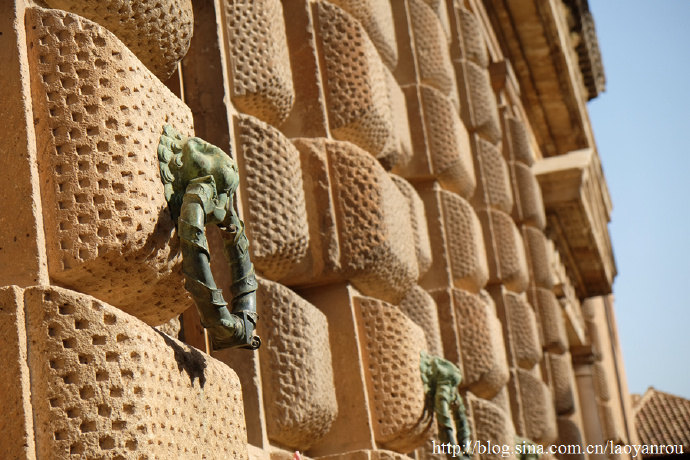
穿过典型天主教风格的欧式宫殿大门进入宫内，又是另外一番景象，一霎间感觉穿越回到中国福建的客家土楼的围屋里了，整个内部庭院是个上方中空的巨大圆形结构，宫殿所有房间都是顺着圆边分布在上下两层的走廊外侧，现在已全部改造为博物馆和美术馆，走廊内侧的廊柱由无数根大理石罗马柱组成，给人以置身古罗马议事厅的错觉。看来卡洛斯五世深谙中国传统文化外方内圆，刚柔并济的中庸之道，糅合了古罗马及文艺复兴风格，掺入了穆德哈尔艺术的细腻，修建了这座位于阿宫心脏地带独一无二的多元风格宫殿建筑。
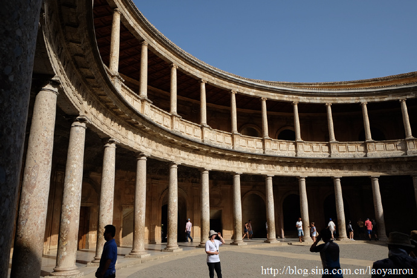
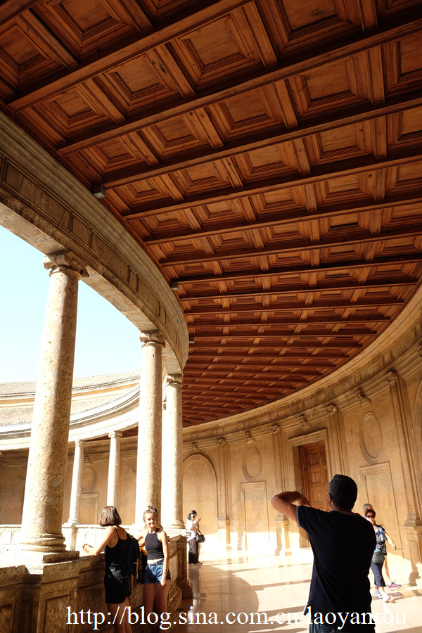
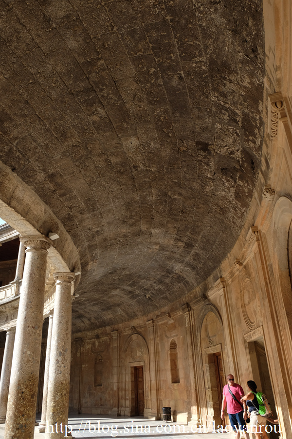
走到城堡区的时候，如同走到了漂浮在山顶的阿宫航空母舰的舰首位置，所谓首当其冲不过如此，在古罗马时代遗址基础上修建的砖石城墙和塔楼尽管墙壁斑驳、弹孔遍布，但依然集结了阿拉伯人最先进军事技术，牢牢地杵在阿宫的最前方，龙盘虎踞地据守着咽喉要害，为摩尔人抵挡了无数次基督教的疯狂进攻，如今虽然已沦为任万千游客踩踏的景点，但雄风依旧，令人唏嘘。
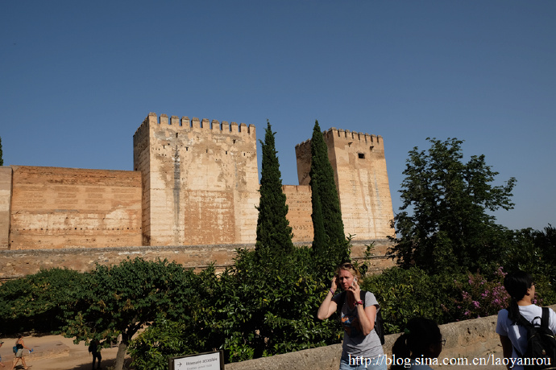
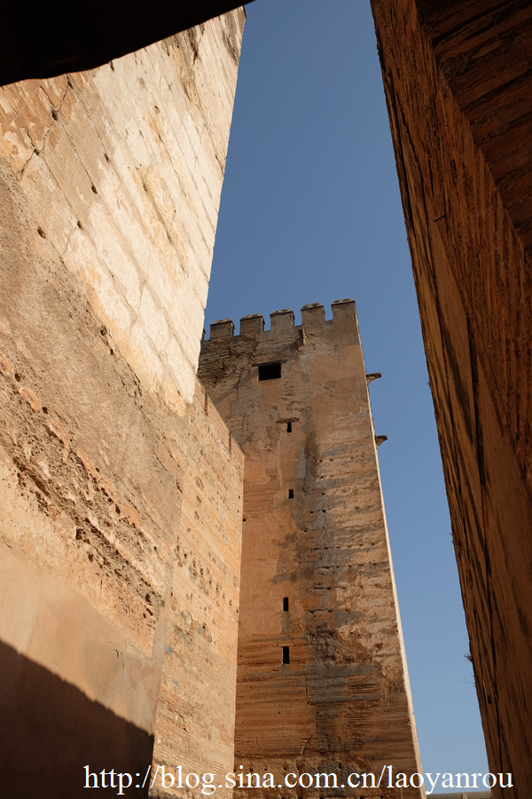
城堡中间是一大片迷宫般的士兵营房的墙基，倘若时光倒流，当年想必是一派的喧嚣热闹的人马鼎沸的景象。登上城堡区最前端也是最高的那座守望塔，中央挂着一口大钟，定时的钟鸣向格拉纳达昭示皇权的存在。从守望塔往下看，整个格拉纳达老城尽收眼底，大片大片褐黄色屋顶簇拥着格拉纳达大教堂向远方奔流蔓延，逐渐消失在天际的绿色田野和灰蒙山脉之中。东侧的钢筋水泥楼房与西侧的阿尔拜辛老城区一老一新相互呼应，尽管风格迥异，但却共存于同一时空代表着不同时代的印记。
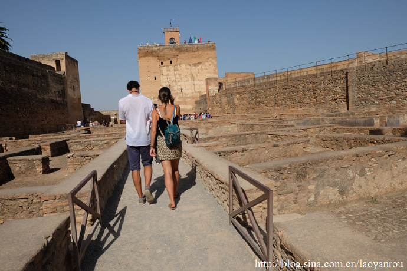
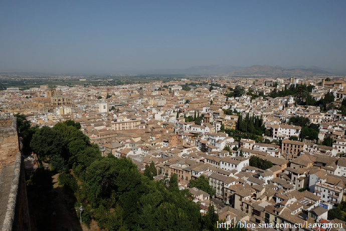
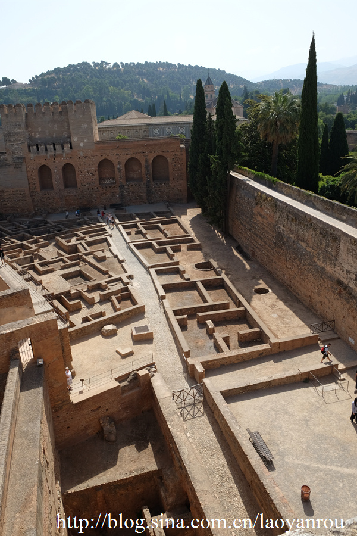
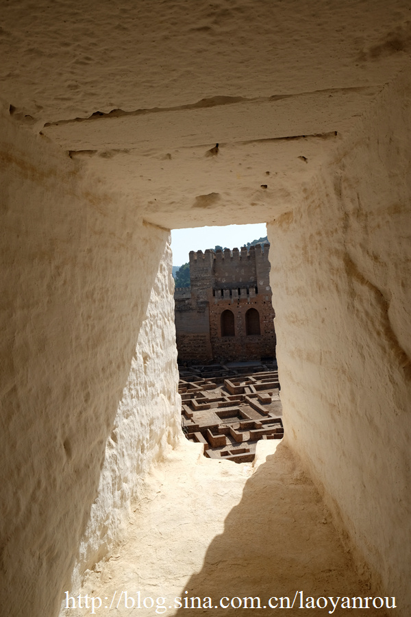
日上中天，阿宫之旅的压轴戏、精华中的精华—纳斯尔宫殿终于向我们揭开了她神秘的面纱。短短的三十分钟参观时间分秒必争，我们裹挟在排队人流之中亦步亦趋，招子放亮，相机待命，时刻准备着为即将到来的风景大开眼界。没曾想刚进第一个门厅就有点迈不开步子了，墙上蓝白相间、细致入微的灰泥雕饰和顶上交错编制成太阳星星浩瀚宇宙般的橡木天花板惊为天人之作，走廊墙上蜂窝状的圆形小窗透射出的阳光勾勒出迷死人不偿命的几何图案，霎时牢牢吸引住了我们的眼球。
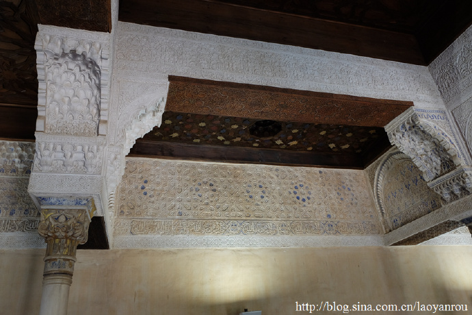
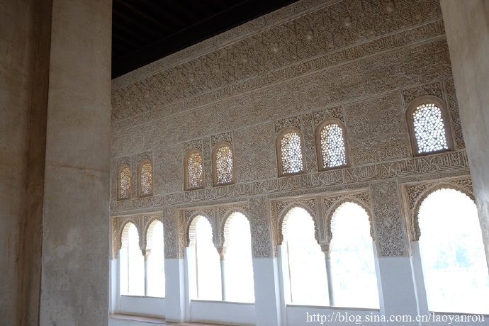
穿过门厅抵达了梅斯亚尔中庭，中间六角形的凹地上放置着一个大王莲叶似的小型喷泉汩汩冒着清水，虽然面积不大，但这个中庭和周边宫殿却是整个纳宫现存历史最悠久的建筑之一，曾是行政和司法执行场所，类似于北京故宫的午门。中庭周边支撑房屋的柱子基本分为上下两个部分，下半部是光滑的传统圆形石柱，而上半部则全是向两旁延伸、牵手连接成拱形的精美绝伦、花样繁多的灰泥雕装饰，实在难以想象当年的摩尔匠人是以怎样的耐性和毅力去完成这些纤细入微得不可思议的纯手工雕刻的，和中国古代搞掐丝珐琅或镂空牙雕的匠人们绝对有得一拼，走廊和宫殿顶部的天花全是用名贵的红木按照特殊的伊斯兰几何图案拼接镶嵌成一体，如漫天暗红的宝石繁星闪耀，贵气逼人。
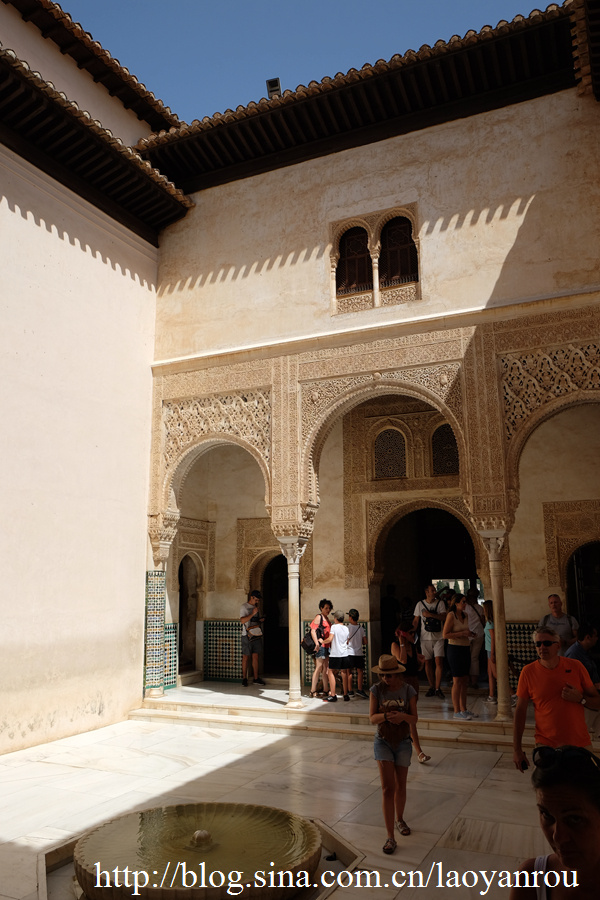
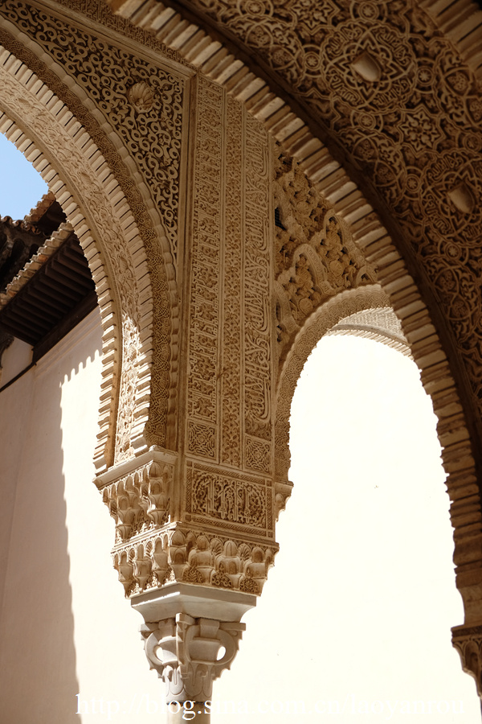
从梅斯亚尔宫再往里走，便来到久负盛名的桃金娘中庭，眼前豁然开朗，如同塞维利亚王宫的桃金娘庭院一样，中间自南向北横亘着一个长方形水池，池水清冽幽幽，波澜不惊，中庭四周科马雷斯宫殿的倒影清晰摇曳，与原作拼接成了完美的镜像，水池南北两面各一个小型喷泉汩汩地流过钥匙状的水槽注入水池之中，宁静中平添了几分灵动。池边两长列修剪得整齐划一、绿意盎然的桃金娘树丛一东一西隔水相对，在灰黄红主色调的宫殿群里划出了两道赏心悦目的翡翠之光。与塞维利亚王宫的仿造桃金娘中庭相比，阿宫桃金娘中庭无论从规模形制，还是从精美大气程度来看，完全形成了碾压性的优势，说是举世无双也是丝毫不为过。
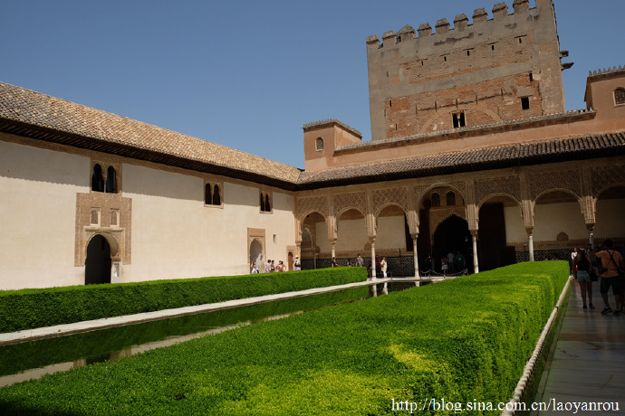
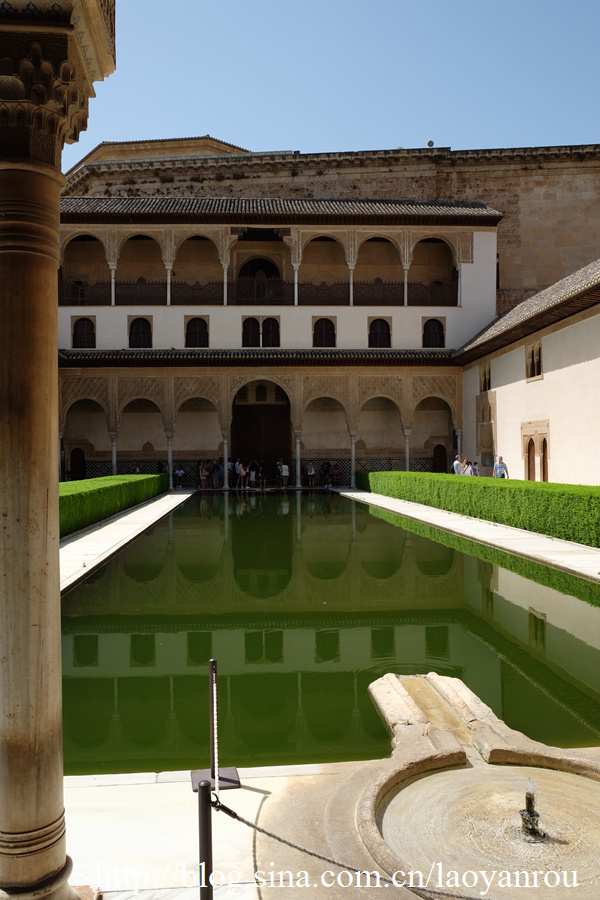
走进中庭北边的科马雷斯塔里，使节厅便展现在眼前，顾名思义这里是苏丹接见外国使节的地方，相当于故宫内廷乾清宫的作用，大厅四周的墙壁上自下而上蛛网密布般地“爬”满了重重叠叠、纹理交错的灰泥雕，绝对达到了密集恐惧症慎入的程度，而整个天花板的红木雕饰虽然略为简单些，但也密密麻麻的用宝石镶嵌在木浮雕中象征出星星、月亮、花朵等伊斯兰教七重天的景象，磅礴大气、蔚为壮观，丝毫看不出19世纪末曾被火烧后修复的痕迹。
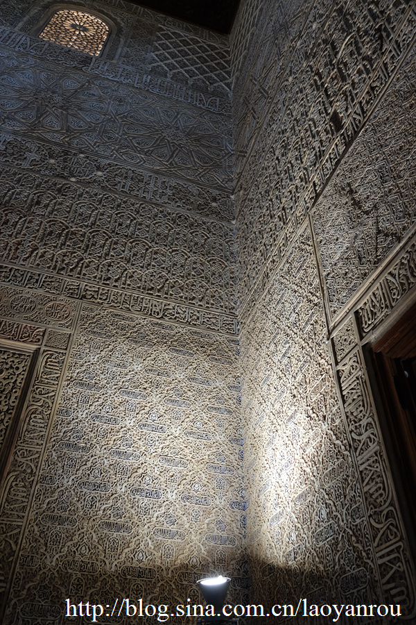
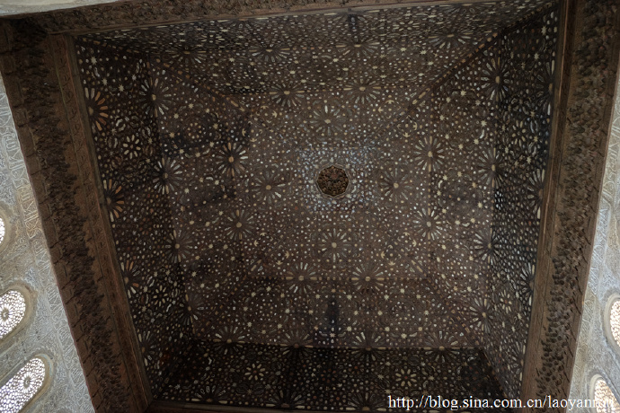
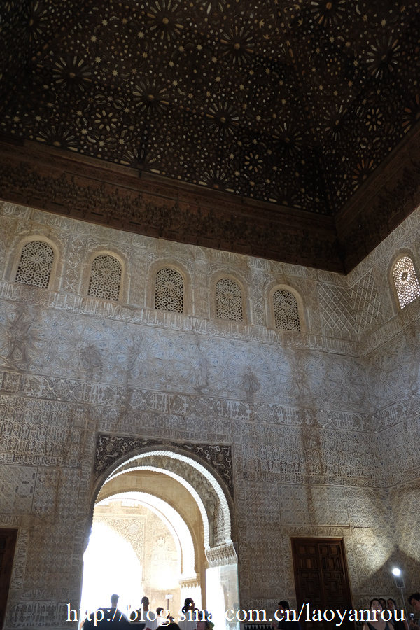
再向东走就进入了苏丹王公贵族最奢华精美的私人活动空间—狮子宫和狮子中庭，其功能相当于故宫的东西六宫。中庭光滑可鉴的大理石地面中央是一座十二只白色大理石狮子驮起的狮子喷泉，泉水从喷泉圆盘底座下顺着狮子口中汩汩流出，经过地上的十字凹型水槽向四周走廊流去，四条水槽分别代表古兰经的极乐园中所说的四条河—水河、乳河、酒河、蜜河，据说当年苏丹听信谗言杀死了阿本塞拉赫斯家族8位男性的鲜血也曾灌满了此喷泉，流遍了整座院子，与眼前恬静和美的景色形成强烈反差，但愿此幕惨剧再也不会上演，代表着阿拉伯高明水利系统造诣的喷泉永远流淌着的是孕育苍生的生命之水。
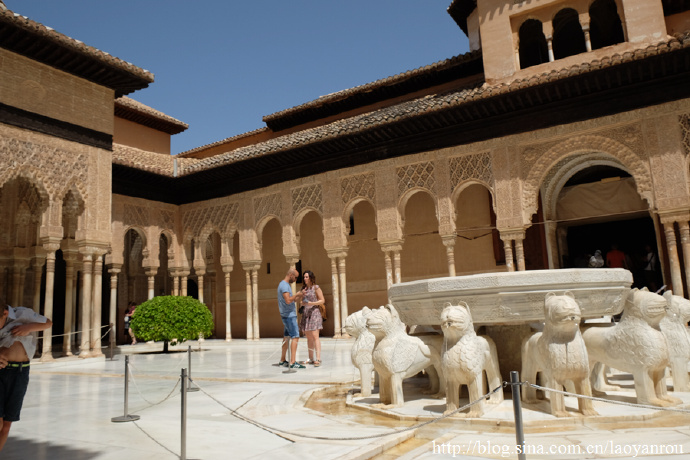

狮子中庭周边四个走廊由124根灰黄色的大理石柱子支撑，成对或单根出现，摩尔工匠毫无意外地用灰泥雕刻将柱子顶部及拱形联结包裹得尤其精美和华丽，尽管中庭中央并不是水池，但走廊依然模仿了水榭设计将一座凉亭向庭院延伸，亭子中间又是一座下凹式的圆形小型喷泉，其水系与狮子喷泉相通，遥相呼应，凉风习习。极有可能当年是苏丹及其皇后嫔妃们烈日炎炎下的纳凉休憩之处。
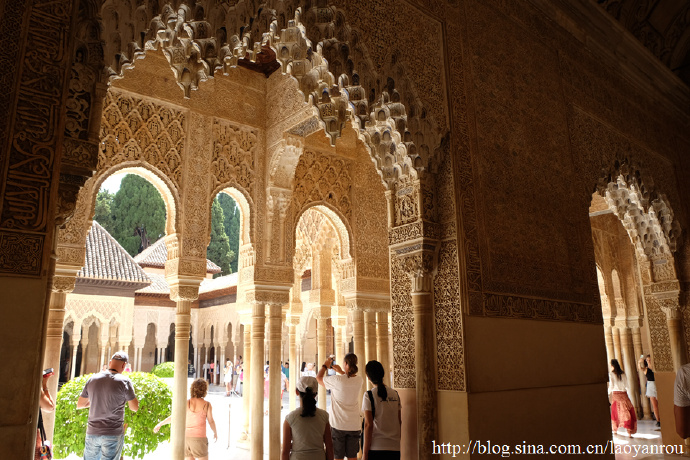
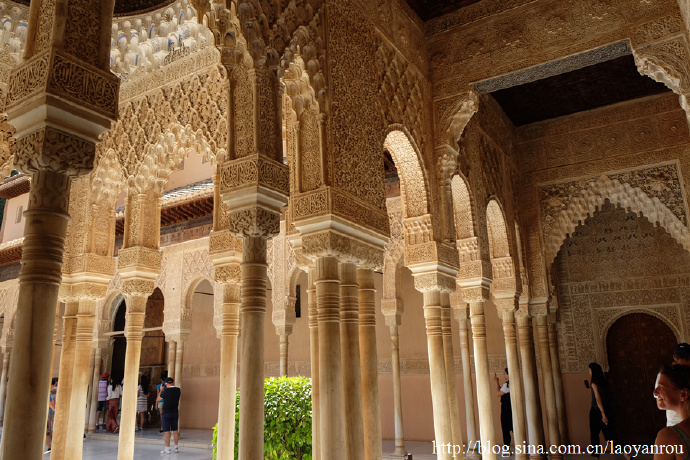
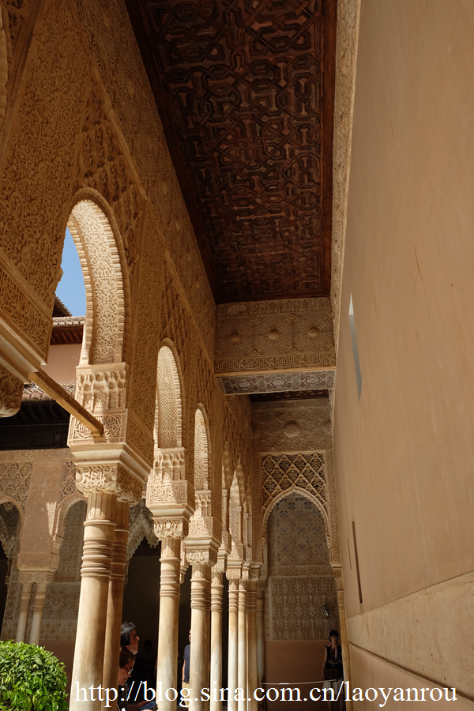
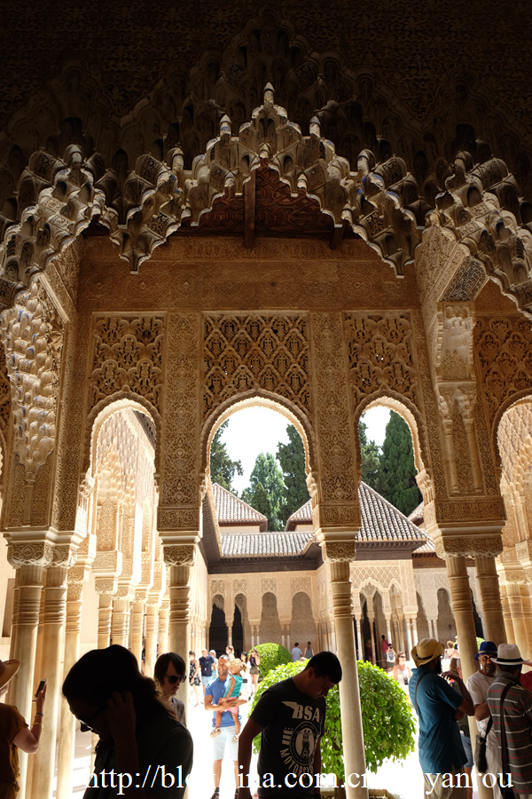
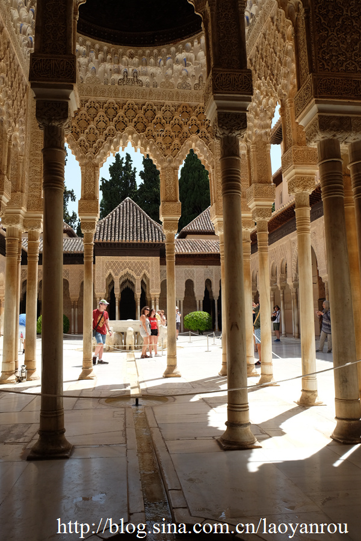
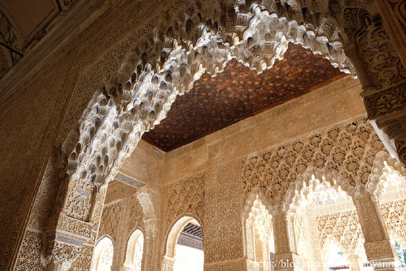
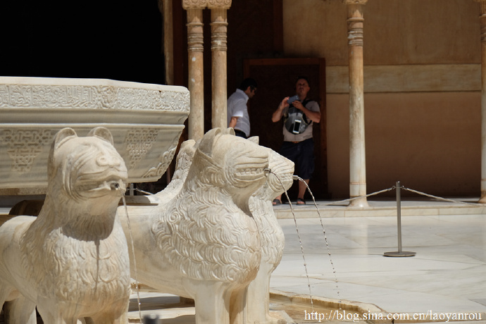
狮子宫主要由围绕狮子中庭的三个大厅构成，南侧的阿本塞拉赫斯厅、东侧的国王厅和北侧的姊妹厅，自踏进阿厅和国王厅开始，就发现周边的游客的视线不由自主地被吸引向上，已逐渐被墙壁和立柱的灰泥雕刻弄得有点视觉疲劳的双眼突然又绽放出了贪婪的光芒，第一次领略到了伊斯兰风格穹顶登峰造极的风采，整个穹顶由无数尖角拱形锥体楔成，一眼望去仿佛一大片钟乳石按蜂窝状布局倒挂在穹顶之下，如果说阿厅的八角形穹顶和国王厅正方形的钟乳石穹顶已经令我们叹为观止的话，那么姊妹厅的花瓣式双层穹顶更是令人震撼，不单面积更大、钟乳石数量更多、蜂窝更密，而且上下层穹顶一密一疏、层次分明，立体感极强，几何构图无懈可击，真真难以用言语形容她给我们带来的视觉冲击，令人不由自主地发出“此物本应天上有”的慨叹。
徜徉在三个大厅之间谋杀了不少菲林之后，受时间所限我们不得不悻悻地继续向纳宫后部前行。和大多数皇宫一样，这里也少不了一个后花园供王公贵族风花雪月、嬉戏玩耍所用，我们在经过林达拉哈瞭望台时已经可以从窗外窥见花园里面绿树茵茵、流水潺潺的阿拉伯园林一角，考虑到长期生活在沙漠等干旱地区的阿拉伯人对于水和绿植的珍爱程度，尽管花园不大，和故宫后花园不能相提并论，但对于苏丹来说却已经是极其奢侈的休闲享受之所了，而本以为到此为止的帕塔尔花园最后柳暗花明又一村，一座曾作为宫殿所用的贵妇塔倒映在宫前小型的水池中，依依惜别，为我们的阿宫之旅添上了完美的最后一笔。
总体而言，阿尔汉布拉宫真不愧为古代伊斯兰建筑艺术登峰造极的瑰宝之一，尽管建筑规模远不如其他超大型的欧洲或中国皇宫，但麻雀虽小五脏俱全，该有的功能如迎宾会客、处理政务、休息娱乐一个也不少。与很多“金玉其外败絮其中”的华而不实的皇宫相比，修建阿宫的匠人把所有心血和精力都投入到了宫殿内部装饰上了，完全不计较外表的粗鄙和暗淡无光，是不是恰好暗含有中国文化中的精光内敛的意味呢？更为难得的是，摩尔工匠在这么有限的一个建筑空间里精雕细琢、绞尽脑汁，将所有细节处理得无微不至、无用不极，颠覆了我对于建筑内部装饰细节的传统认知，令阿宫这座独一无二、举世无双艺术瑰宝独步于世界经典建筑史之林，也不枉我们绕了半个地球、兜了大半个西班牙到此一游！
经历了一整天的视觉和身体疲劳双重考验，我们总算可以轻松地在格拉纳达的老城大街上闲逛一下了，老城不大，除了大教堂周边一些文艺复兴风格的建筑看上去有点年头以外，大多房屋都是近几十年修建起来的，估计都是本地人自住或者改造为民宿出租给世界各地慕名而至的游客用的。闲逛中意外发现了一间意大利冰淇淋店，一排穿着白色制服的店员忙碌得不可开交，络绎而来的顾客人头攒动，而冰淇淋的价格最贵不超过3欧，如此诱惑力怎能不令AMY食指大动，吃得尽兴而归？酒足饭饱，夕阳西下，站在民宿的露台眺望远方依旧清晰可见阿尔拜辛区、阿尔汉布拉宫和山脉，风景无限好，只是近黄昏。